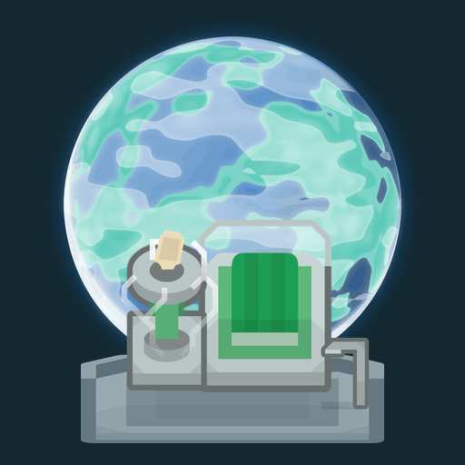

Veluno Studio
Eco Mart
Od zbierania odpadów do automatyzacji recyklingu i zarządzania planetami.
Przywracaj planetom życie
Zbieraj odpady, rozwijaj maszyny i wyposażenie, wysyłaj roboty do sprzątania. Kolejne wyprawy prowadzą od zielonej Viridii do lodowych, pustynnych i oceanicznych krajobrazów.
W późniejszych etapach przejmujesz zarządzanie z góry: kontrolujesz zapasy, produkcję i dostawy do statku.
Kontakt i prywatność
Kontakt z wydawcą oraz pytania o dane i raporty diagnostyczne:
Polityka prywatności Eco Mart